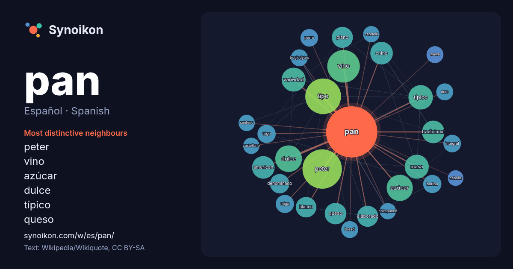

Español · Spanish · word of the day list
pan
“bread” · The words found around it in 1392 instances from Spanish Wikipedia, Wikiquote.

Most distinctive neighbours
- peter 55×
- vino 38×
- azúcar 29×
- dulce 26×
- típico 25×
- queso 20×
- tipo 20×
- masa 20×
- american 20×
- chino 19×
- elaborado 19×
- variedad 18×
- tradicional 17×
- miga 16×
- plano 16×
- harina 15×
- trigo 15×
- wawa 14×
- bread 14×
- troglodytes 14×
× = how many times more often than in general Spanish Wikipedia text.
Most frequent neighbours
- peter 70
- tipo 58
- vino 48
- dulce 32
- azúcar 31
- típico 27
- masa 26
- variedad 26
- american 23
- chino 23
- españa 23
- tradicional 23
- llamado 21
- nombre 21
- queso 21
- agua 20
- elaborado 20
- plano 20
- blanco 19
- conocido 19
In context
- El pan, del latín panis, es una comida que se suele preparar mediante el horneado de una masa elaborada fundamentalmente con cereal, agua y sal. La mezcla Wikipedia snippets · Pan
- B.Pan - Bo Pan fl. 2008 J.T.Pan - Jin Tang Pan 1935- K.Y.Pan - Kai Yu Pan 1937- Kuo Y.Pan - Kuo Ying Pan S.L.Pan - Sheng Li Pan fl. 1986 S.H.Pan - Shi Wikipedia snippets · Pan (desambiguación)
- Pan (en griego antiguo: Πάν, Pán) era un dios rústico de la naturaleza salvaje. Era el dios de los pastores y el rebaño en la mitología griega, asociado Wikipedia snippets · Pan (mitología)
- Pan American World Airways, más conocida como PanAm, fue la aerolínea internacional más importante de los Estados Unidos desde la década de 1930 hasta Wikipedia snippets · Pan Am
- El pan candeal, sobado o bregado es un tipo de pan blanco que se caracteriza por una baja hidratación, textura densa y larga durabilidad. Su elaboración Wikipedia snippets · Pan candeal
- El pan de molde es aquel pan cuya masa se enriquece con mantequilla o leche y se hornea dentro de un molde o lata. Gracias a esto, el pan resultante tiene Wikipedia snippets · Pan de molde
- El pan ácimo (también, ázimo) o pan cenceño es el pan que se hace sin levadura. Su masa es una mezcla de harina de algún cereal con agua, a la que se Wikipedia snippets · Pan ácimo
- Pan y toros es un tópico cultural español que, parafraseando la expresión latina de Juvenal Panem et circenses (Pan y circo), describe la fiesta de los Wikipedia snippets · Pan y toros
More Spanish words
- agua
- arte
- bosque
- caballo
- camino
- campana
- canción
- ciencia
- ciudad
- clima
- comida
- corazón
- desierto
- dinero
- dios
- espejo
- estrella
- familia
- fuerza
- gato
- historia
- invierno
- isla
- jardín
- lengua
- lluvia
- madre
- mapa
- miel
- montaña
- muerte
- naturaleza
- oro
- otoño
- perro
- puente
- reloj
- sal
- salud
- silencio
- sombra
- tiempo
- tormenta
- trabajo
- tren
- té
- verano
- verdad
- vida
Precomputed on 2026-10-09 with default settings (±5 words, medium corpus). The interactive map can refresh it with live data.